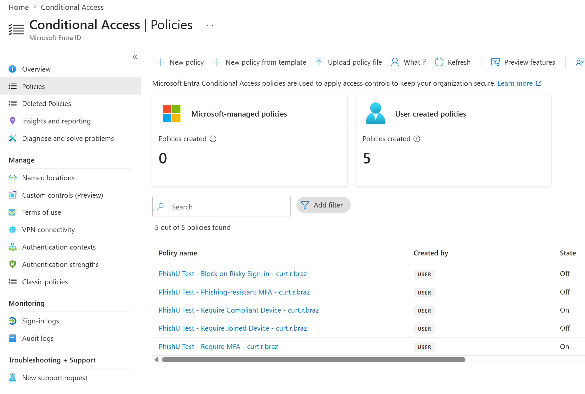
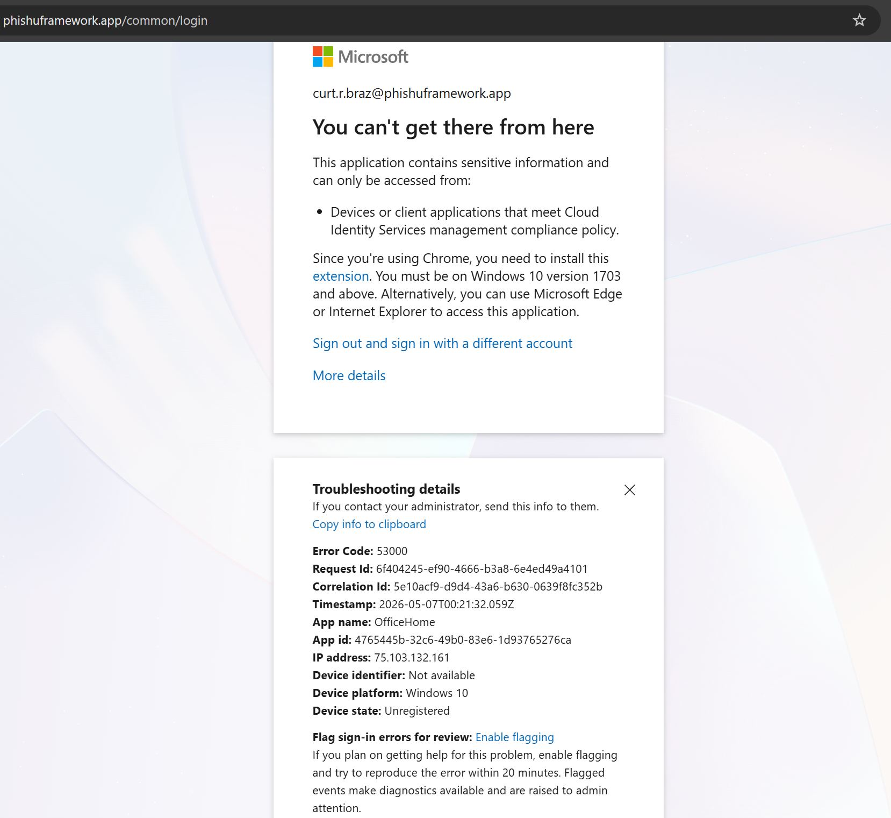
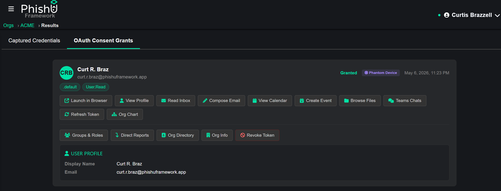

The premise of Conditional Access is straightforward. A user can have the right password, the right MFA, and the right tenant assignment, and still be denied access if their device is not compliant or not joined to the directory. This is the layer most organizations lean on as their primary defense against AiTM, because session cookies stolen by an attacker proxy are not coming from a compliant device, and Microsoft is supposed to notice.
On May 5, 2026, Clint Josy at Cyderes' Howler Cell research team published One Password, No Device, Full Tenant: Dismantling Azure AD Conditional Access Through Device Identity Abuse, a writeup of an authorized red-team engagement that chained phantom device registration with Primary Refresh Token manipulation to walk past exactly that defense. The technique is not new in its parts. The foundational primitives have been public for years through Nestori Syynimaa's AADInternals project and Dirk-Jan Mollema's roadtools, and the Cyderes engagement used roadtx from roadtools directly for the device-registration step. What the Cyderes writeup did was frame the chained workflow against a real customer's Conditional Access stack, a production tenant with roughly 16,000 users, 82,000 devices, and 78 Conditional Access policies, and show that the controls most defenders rely on as their AiTM mitigation can be walked through end-to-end by an attacker who already has the password, ultimately reaching Global Administrator.
As of today, the PhishU Framework ships that chain by default for authorized red-team engagements. Every TransparentProxy Landing Page targeting Microsoft has it enabled with no operator configuration, no per-Landing-Page toggle, and no extra step in the campaign workflow. When Conditional Access fires the block, the Framework handles the rest in the background and the captured tokens land in the same Token Explorer the operator already uses for OAuth Consent Grant and Device Code captures.
The Three Conditional Access Policies This Bypasses
The chain targets the three Conditional Access controls organizations most commonly deploy against AiTM:
- Require Compliant Device. The Microsoft Entra control that requires the signing-in device to be Intune-managed and reported as compliant. Most large enterprise tenants enforce this on at least their privileged users. Returns AADSTS 53000 (
managed_device_required) when it blocks. - Require Hybrid Azure AD-joined Device. Requires the device to be domain-joined to on-prem Active Directory and synced to Entra ID via Azure AD Connect. Returns AADSTS 53001 (
hybrid_join_required). - Require Azure AD-joined Device. The weakest of the three. Just requires the device to be joined to the tenant's directory. Common as a baseline control on tenants that do not run on-prem AD or Intune.
Each of these returns a distinct error class from Microsoft's authorization endpoint. The PhishU AiTM proxy parses upstream responses, classifies the verdict and the specific policy that fired, and persists it directly onto the captured-credential row. That classification is what triggers the rest of the chain.

What the Victim Sees
Without the pivot, a victim who hits a CA-enforced tenant through an AiTM proxy gets one of Microsoft's "You can't get there from here" error pages. That is a noisy outcome. The victim notices, may report it to IT, and the engagement window narrows.
With the pivot, the proxy detects the CA verdict, persists it for reporting, and replaces Microsoft's error response body with a meta-refresh and JavaScript redirect to login.microsoftonline.com. The victim sees a routine handoff to the real Microsoft sign-in page, exactly the way a normal sign-in flow concludes. No error. No "you can't get there from here." No reason to file a ticket.

login.microsoftonline.com so the victim never sees it.What Happens in the Background
While the victim is being seamlessly redirected, an asynchronous backend worker takes over.
It uses the captured password to acquire an access token scoped to the Device Registration Service. DRS is a system resource that is not subject to standard Conditional Access policies, which is what makes the rest of the chain possible. With that token, it generates a fresh RSA-2048 keypair, then registers a phantom device against the victim's tenant via the DRS enrollment endpoint, claiming Hybrid Azure AD-join via the SyncJoined registration type and the victim's UPN domain. If the tenant has Intune licensing, the worker then enrolls the phantom device for MDM and self-reports a compliant state. If the tenant does not have Intune, that step no-ops gracefully and the device remains domain-joined.
With the phantom device registered, the worker requests a Primary Refresh Token using a JWT-bearer grant signed by the phantom device's private key, with the device certificate embedded in the JWT header. Microsoft validates the certificate against the device it just registered, accepts the cert as authoritative, and returns the PRT plus an encrypted session key. The worker unwraps the session key with the phantom device's private key, then exchanges the PRT for a Microsoft Graph access token by sending an x-ms-RefreshTokenCredential cookie to login.microsoftonline.com/common/oauth2/authorize. Microsoft's authorization endpoint evaluates Conditional Access against the phantom device's claim and accepts it.
The chain finishes by exchanging the resulting authorization code for tokens and verifying with a Graph /me call that the access token actually works.
How It Surfaces in Token Explorer
This is the integration the operator cares about. The captured grant lands in the Framework's existing Captured Credentials tab as a new row with a "Phantom Device" badge and the same post-exploitation surface every other Microsoft Graph grant has. Read the inbox. Browse OneDrive and SharePoint files. Send mail as the user. Refresh the access token. Revoke the grant cleanly when the engagement ends.
There is no separate workflow for phantom-device captures. No new tab to learn. No different scope model. The same Token Explorer that operators already use for OAuth Consent Grant and Device Code captures works against this grant the moment it appears.

If a previous phantom-device grant for the same victim was captured and later revoked by the tenant admin, the Framework refreshes that row in place rather than duplicating. The revoked badge clears, the new tokens are written to the existing record, and the operator does not need to track which row is current. One user, one grant, always reflecting the latest working tokens.
The Conditional Access Posture Deliverable
Every Conditional Access policy that fired during the engagement is recorded on the captured-credential row. AADSTS 53000 is annotated as managed_device_required. AADSTS 53001 is annotated as hybrid_join_required. AADSTS 530021 is annotated as app_protection_policy_required. The annotation is exact, not paraphrased.
That data flows live into the Campaign Run dashboard widget, the Org Analytics posture rollup, and the AI-generated PDF report at the end of the engagement. The customer's CISO sees not just whether their users got phished, but specifically which Conditional Access policies fired against the attempt and which were bypassed end-to-end. That is a posture deliverable, not a click-through rate. It is the kind of finding security leaders can take to a steering committee and use to drive specific policy changes, rather than another generic "users keep clicking" report.
Conditional Access posture is captured whether the bypass succeeds or not. A policy that genuinely held against the technique is recorded as a downgrade-rejected-by-policy outcome and surfaces in the report as a positive defensive datapoint. The customer learns which of their controls actually work under fire.
The Honest Limits
Research credibility depends on naming where the technique fails. The boundaries are visible to defenders so they know what to invest in.
The technique requires the victim to enter their password. The PRT acquisition step uses a Resource Owner Password Credentials grant, so a victim who would otherwise authenticate with a passkey would normally fall outside this chain. The PhishU Framework already addresses that case with another technique baked in by default: the AiTM proxy strips phishing-resistant authentication options out of the identity provider's auth-method picker before the victim sees them, plus a WebAuthn API shim that intercepts navigator.credentials.get / .create to catch passkey-first and conditional-UI flows. The picker the victim is shown contains only password and phishable-fallback factors, the victim signs in with their password, and the phantom-device chain in this post then captures normally. Full writeup of the response-side passkey bypass is in our prior post on the 95 percent enforcement gap. The remaining hard limit is users who are passkey-only enrolled with no password fallback configured at all in the tenant: with no fallback factor, the IdP has nothing to fall back to, and the Framework records the outcome as a passkey-only positive defensive datapoint.
Server-side phishing-resistant authentication enforcement still rejects the chosen factor at policy time. Microsoft Entra Conditional Access Authentication Strength configured as Phishing-resistant MFA, Google Advanced Protection Program enrollment, Okta Authenticator Policy set to Possession plus Hardware-protected, and the US Federal M-22-09 mandate all defeat this chain at the policy layer. The Framework records these as positive defensive datapoints. The org's posture genuinely held.
The bypass against Require Compliant Device requires the victim tenant to have Intune licensing for the phantom-device enrollment and compliance self-report path to land. The bypass against Require Hybrid Azure AD-joined Device requires the victim tenant to have Azure AD Connect Sync configured, because Microsoft will reject a SyncJoined claim against a tenant with no on-prem AD sync. Most enterprise tenants have one or the other; lab tenants typically have neither. Pivot success in any specific engagement depends on victim-tenant posture, and the Framework reports honestly per engagement.
Finally, risk-based step-up at the PRT-cookie exchange step can still trigger additional verification we cannot intercept. This is rare in practice but worth naming.
The Defensive Playbook
The durable defenses against this technique class are not about adding more Conditional Access policies. They are about closing the specific gaps the chain exploits.
The first and most important defense is to enforce phishing-resistant authentication at the policy layer for the populations that matter most. Conditional Access Authentication Strength configured as Phishing-resistant MFA, scoped to admins, finance, IT, executives, and source-code committers, defeats this chain at the policy time-of-evaluation regardless of what the phantom device claims. The chain still runs. The tokens are still issued. The customer's policy still rejects them at the resource step. Pair this with hardware-backed authenticator enrollment for the same tier, and the residual risk for that population approaches zero.
The second is to monitor the audit log for unexpected device registrations. Every phantom device the chain registers shows up in the Entra audit log as an Add device event under the victim's identity. Most organizations do not alert on this. They should. A new device registration that the user did not initiate is a high-confidence signal of either the technique in this post or a similar abuse pattern.
The third is to require TPM-attested device certificates at registration time, via an Intune device-compliance policy that requires TPM 2.0 attestation as a prerequisite. The Framework's phantom device generates a software RSA keypair, not a TPM-attested key. A tenant policy that rejects non-TPM-attested registrations will reject the phantom device at the DRS step before the rest of the chain can run. This is a Microsoft-side configuration, not a vendor-side one, and it is widely under-deployed.
The fourth is the Health Attestation Service, which validates device claims against external attestation rather than self-reported compliance. Tenants that route compliance evaluation through HAS reject the self-reported compliance signal the chain produces.
The Defensive Takeaway
Conditional Access policies that require a compliant or joined device are necessary, but not sufficient against a determined adversary who has the password. The chain that walks past them has been documented in the public PoC literature for years; this week's Cyderes writeup framed it as a real red-team workflow against a real customer. Defenders need to be tested against it.
The PhishU Framework runs the same technique by default for authorized red-team engagements. When a Conditional Access policy fires, the Framework records exactly which policy was evaluated, walks the chain, and lands the working access token in the operator's Token Explorer. The customer's report shows which controls held and which did not, against their tenant, in their environment, with their users. Run the engagement, look at which policies actually defeated the technique, and you will know what to invest in next.
Credits and Prior Art
The chained workflow described in this post was published on May 5, 2026 by Clint Josy at Cyderes' Howler Cell research team as One Password, No Device, Full Tenant: Dismantling Azure AD Conditional Access Through Device Identity Abuse. The foundational primitives (phantom device registration via DRS spoofing, PRT manipulation, session-key derivation) have been in the public proof-of-concept literature for years through Nestori Syynimaa's AADInternals project (the canonical PowerShell toolkit, with functions including Join-AADIntDeviceToAzureAD, Set-AADIntDeviceCompliant, and Get-AADIntUserPRTToken) and Dirk-Jan Mollema's roadtools project (the Cyderes engagement used roadtx from roadtools for the device-registration step). Microsoft Threat Intelligence has tracked state-aligned threat actors using this primitive class against real organizations. PhishU's contribution is a productized integration of the same technique into authorized red-team engagement workflows, with results landing in the Framework's existing Token Explorer, captured-credential reporting, and Conditional Access posture deliverable, so customers can measure their own posture against the technique without standing up red-team tooling separately.